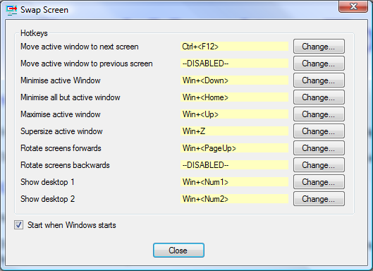

Swap Screen
Swap Screen
Swap Screen supports 10 hotkeys to simplify the process of handling windows in a multiple monitor setup.
This includes features such as moving the current window to the next screen and minimising all windows on a single screen only.
Usage
When SwapScreen.exe is run it will put itself into the notification area of the taskbar.
Double clicking on the SwapScreen icon in the notification area will bring up the following screen which allows you to specify which hotkeys to use for the various possible actions.

By default only the Move active window to next screen hotkey is enabled, but by clicking on the appropriate 'Change...' button, you can enable the other hotkeys and choose a suitable key combination for the hotkey.
Certain key combinations can not be used as hotkeys. If you try to use one of these, then you will be told that this is the case and will be able to change the key combination.
Right clicking on the SwapScreen icon in notification area will bring up its context menu where you will find options to minimise all windows on individual monitors, and to move all application windows to the next monitor.
You may define hotkeys for the following actions:
Move active window to next screen
This moves the active window onto the next screen, even if it is currently maximised.
If you are running Windows 7, then Windows 7 already provides this functionality with the
Win+Shift+<Right> hotkey. If you are happy with this, then you can disable Swap Screen's hotkey for this. However you may find this combination is quite cumbersome in which case you can define your own simpler hotkey.
Move active window to previous screen
This performs the opposite of Move active window to next screen.
If you are running Windows 7, then Windows 7 already provides this functionality with the
Win+Shift+<Left> hotkey.
Minimise active window
If the active window can be minimised, then it is minimised.
If you are running Windows 7, then Windows 7 already provides this functionality with the
Win+<Down> hotkey.
Minimise all but active window
This will attempt to minimise all windows apart from the active window.
If you are running Windows 7, then Windows 7 already provides this functionality with the
Win+<Home> hotkey.
Maximise active window
If the active window can be maximised, then it is maximised.
If you are running Windows 7, then Windows 7 already provides this functionality with the
Win+<Up> hotkey.
Supersize active window
If the active window can be resized, then it is made large enough to cover all screens.
This may mean that part(s) of the window may not be visible if your screens have different resolutions,
or if you have a fixed taskbar displayed.
Rotate screens forwards
This will attempt to move every application window onto the next screen from where it is currently displayed.
Rotate screens backwards
This does the reverse of Rotate screens forwards.
Show Desktop 1
This will attempt to minimise all application windows on the first screen.
Show Desktop 2
This will attempt to minimise all application windows on the second screen.
Start when Windows starts
If you want SwapScreen to start automatically when your computer boots, then just check the 'Start when Windows starts' option.
Note: if you have used an older version of Swap Screen and have added a shortcut to its executable into the StartUp folder, then you will want to remove this shortcut or two copies of the program would be started.
Application windows
SwapScreen attempts to detect those windows which it would not make sense to move and ignores them.
The following windows will not be moved or minimised by SwapScreen:
- Any window that does not have the WS_VISIBLE attribute set.
- Any window that has been deliberately positioned offscreen.
- Any window with the WS_EX_TOOLWINDOW style, unless this is the active window and you are performing an operation on the active window.
If the SwapScreen hotkey is used when running a full screen application, normally a game, then with some games the image on the primary screen is copied to the next screen, but the game continues on the primary screen. However this does not work with all games. In some cases you may find that you have to press the hotkey again to restore normal operation of the game, and in others it can mess the current game up so use with caution.
'Run as Administrator'
Normally, SwapScreen can not move or minimise any window belonging to applications that have been started using the 'Run as Administrator' option as it will have insufficient permission to do so.
If you want SwapScreen to be able to move or minimise such windows, then you will need to run SwapScreen with the 'Run as Administrator' option.